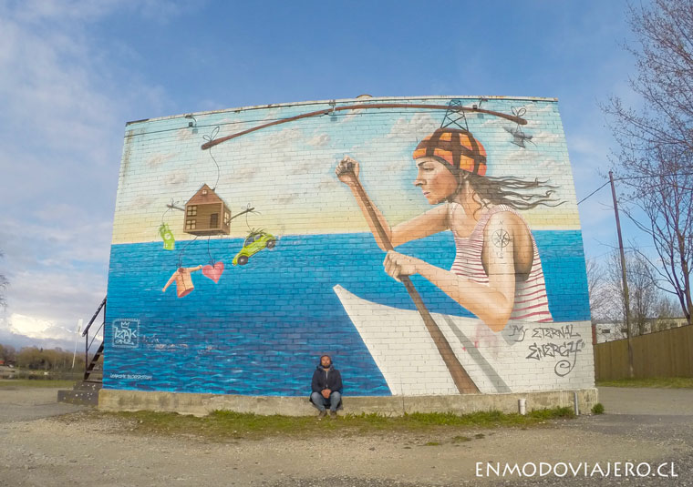

España
En la "Sala de la Gran Pintura", la cual es la más espectacular en cuanto a los frescos existentes en la mansión, se encuentran pinturas son siglo I AC, que hacen referencia a la iniciación de las mujeres en el culto a Dionisio.
En la "Sala de la Gran Pintura", la cual es la más espectacular en cuanto a los frescos existentes en la mansión, se encuentran pinturas son siglo I AC, que hacen referencia a la iniciación de las mujeres en el culto a Dionisio.
Miguel Ángel decoró por completo la bóveda de este espacio, con un conjunto de frescos que representan un enorme número de escenas bíblicas y en el que se citan más de 300 personajes distintos en unos 500 metros cuadrados de pintura. El pasaje de la Creación de Adán debe ser uno de los más famosos de la Historia del Arte.
En Pärnu en Estonia, el cual muestra la ambición por las cosas materiales y superficiales se ha posicionado como el motor de la vida en el siglo XXI. Este mural y otros se pueden encontrar al caminar junto al río Pärnu, muy cerca del puente que va hacia la bella ciudad de Tallin, la capital de Estonia.
